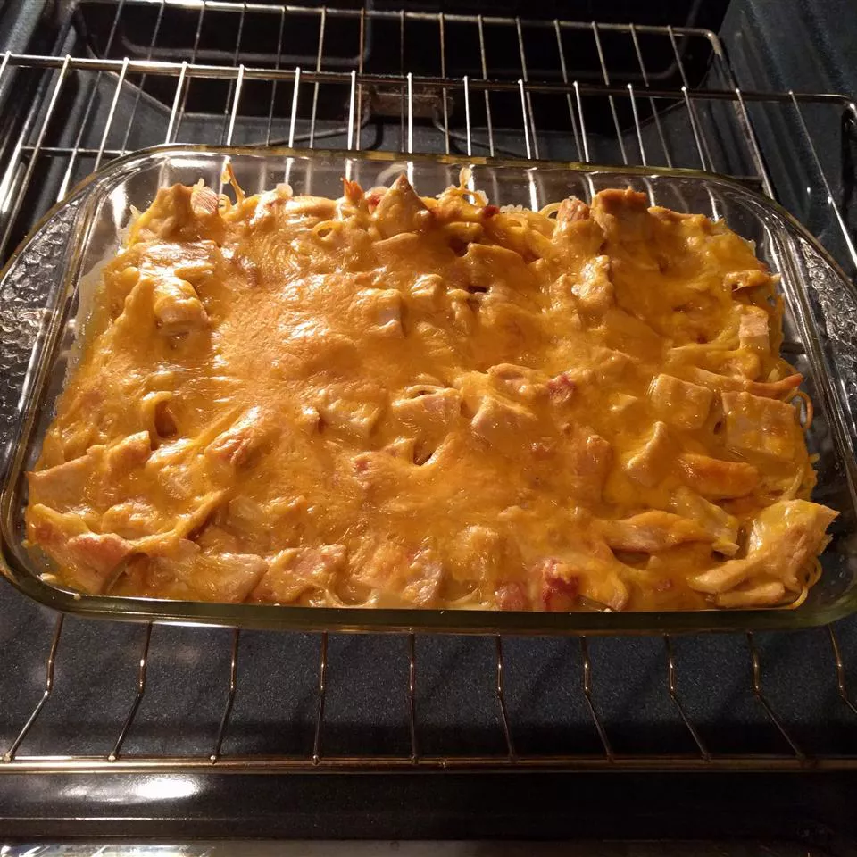

Chicken Tetrazzini

Description
An easy chicken tetrazzini recipe given to me by my beloved wife, Irum Yousaf. This delicious recipe is a favorite with my kids and their friends. It's easy to double.
Ingredients
- 1 pound cooked, drained spaghetti noodles
- 5 chicken breasts, cooked and cubed
- 2 (10.5 ounce) cans condensed cream of chicken soup
- 2 ¼ cups water
- ¼ cup butter
- 2 cubes chicken bouillon
- ¼ cup shredded
- Cheddar cheese
Steps
- Step 1
- Preheat the oven to 350 degrees F (175 degrees C).
- Step 2
- cooked spaghetti noodles into 9x13-inch baking dish. Place chicken on top of spaghetti.
- Step 3
- Bring condensed soup, water, butter, and bouillon to a boil in a medium saucepan. Pour soup mixture over pasta and chicken. Sprinkle Cheddar on top and press down a bit.
- Step 4
- Bake in the preheated oven for 25 minutes.